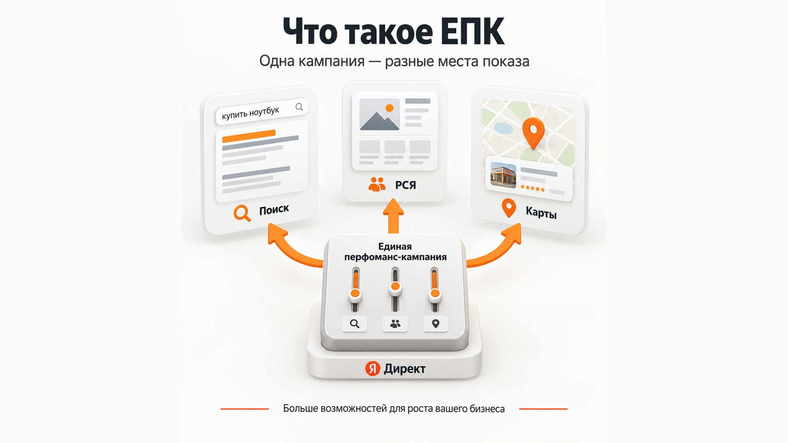
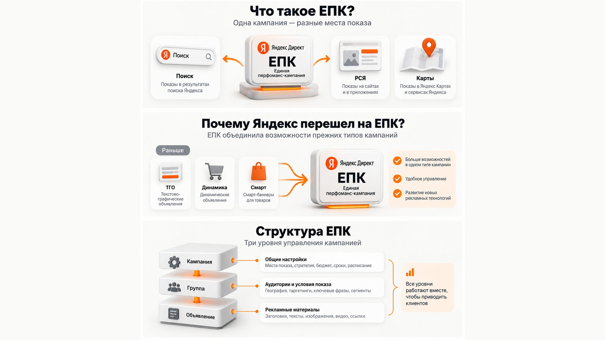
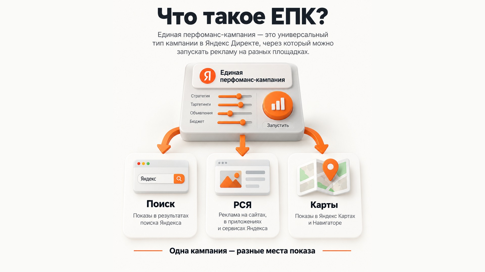

Блог о платном трафике
Единая перфоманс-кампания Яндекс Директ: что такое ЕПК
Единая перфоманс-кампания, или ЕПК, - основной универсальный тип кампании в экспертном режиме Яндекс Директа.

Единая перфоманс-кампания, или ЕПК, - основной универсальный тип кампании в экспертном режиме Яндекс Директа. Через нее можно запускать рекламу на Поиске, в РСЯ, Картах и других доступных местах размещения, использовать разные типы объявлений и гибко управлять группами, таргетингами и стратегией. Источник в Яндекс Справке
Из-за этого у рекламодателей часто возникает путаница. Раньше привычно говорили: «создать кампанию на Поиске», «запустить РСЯ», «сделать динамическую кампанию» или «запустить смарт-баннеры». Сейчас большая часть этих задач решается внутри одного типа кампании - ЕПК.
При этом ЕПК не означает, что Поиск и РСЯ обязательно нужно смешивать. Можно создать ЕПК только для Поиска, только для Рекламной сети или использовать несколько мест показа одновременно. Поиск и РСЯ сейчас правильнее воспринимать прежде всего как места показа рекламы, а ЕПК - как оболочку, внутри которой настраивается сама кампания.
Статья «Как работает Яндекс Директ»
Что такое ЕПК простыми словами
Если максимально упростить, Единая перфоманс-кампания - это универсальный конструктор рекламной кампании в Яндекс Директе.
Раньше для разных задач существовало несколько отдельных типов кампаний. Для обычной рекламы использовались текстово-графические объявления, для автоматического продвижения каталога - динамические объявления, для товаров - смарт-баннеры.
Яндекс постепенно объединил эти возможности внутри ЕПК. Бета-версия появилась осенью 2023 года, в апреле 2024 года ЕПК вышла из бета-тестирования, после чего старые типы кампаний начали переводиться в новый формат.
Поэтому надпись «Единая перфоманс-кампания» в интерфейсе не означает какой-то один особый способ размещения рекламы. Это скорее универсальная рабочая среда.
Внутри нее можно решить совершенно разные задачи:
- собрать классическую рекламу на Поиске;
- запустить отдельную кампанию в РСЯ;
- одновременно использовать несколько мест показа;
- рекламировать товары из фида;
- автоматически формировать объявления для страниц каталога;
- использовать ретаргетинг и сегменты аудитории;
- создавать разные группы с собственными таргетингами;
- использовать разные типы объявлений в рамках одной кампании.
Именно поэтому в названии есть слово «единая».
ЕПК и Поиск - это не разные альтернативы
Одна из самых частых ошибок - сравнивать «ЕПК или Поиск».
Это примерно как выбирать между автомобилем и трассой.
ЕПК - тип кампании и набор инструментов управления рекламой. Поиск - одно из мест, где объявления этой кампании могут показываться.
Например, можно создать:
ЕПК только на Поиске.
Объявления будут показываться пользователям, которые вводят подходящие запросы в Яндексе.
ЕПК только в РСЯ.
Реклама будет работать в Рекламной сети Яндекса.
ЕПК с несколькими местами показа.
Одна кампания может использовать сразу несколько доступных вариантов размещения, если такая структура соответствует задаче.
Яндекс прямо указывает, что в режиме эксперта ЕПК позволяет вручную выбирать место показа, в том числе только Поиск или только РСЯ.
Поэтому выражение «поисковая кампания» по-прежнему нормально использовать в разговоре. Просто технически сейчас такая кампания может быть создана как Единая перфоманс-кампания с выбранным местом показа «Поиск».
Статья «Что такое РСЯ в Яндекс Директ»
Почему Яндекс перешел на Единые перфоманс-кампании

До появления ЕПК структура Директа была гораздо сильнее привязана к типу объявления.
Отдельно существовали кампании с текстово-графическими объявлениями, отдельно динамические объявления, отдельно смарт-баннеры. Из-за этого разные рекламные механики существовали фактически в разных оболочках.
В ноябре 2023 года Яндекс представил ЕПК как новый формат, объединяющий и расширяющий возможности текстово-графических, графических и динамических объявлений, а также смарт-баннеров.
В 2024 году начался переход старых кампаний на новую структуру. Яндекс сначала разрешил переносить существующие кампании самостоятельно, затем обновлял оставшиеся типы автоматически с сохранением статистики и прогресса обучения.
В результате вместо множества отдельных типов получилась единая трехуровневая структура:
кампания -> группа объявлений -> объявления.
Новые рекламные технологии Яндекс также в первую очередь развивает внутри ЕПК.
Как устроена Единая перфоманс-кампания
У ЕПК три основных уровня настройки. Это одна из вещей, которые достаточно понять один раз, после чего интерфейс становится намного логичнее.
Уровень кампании
Здесь задаются настройки, общие для всей кампании:
- места показа;
- стратегия;
- сроки работы;
- расписание;
- общие ограничения и корректировки;
- дополнительные параметры.
Например, именно здесь можно решить, будет кампания работать только на Поиске или использовать другие площадки.
Уровень группы
Группа отвечает в первую очередь за аудиторию и условия показа.
Здесь могут настраиваться:
- география;
- автотаргетинг;
- тематические слова;
- интересы и привычки;
- сегменты аудитории;
- сценарии группы;
- другие параметры таргетинга.
В одной ЕПК можно создать несколько групп с разными настройками.
Например, я могу отдельно выделить разные направления услуг, регионы или аудитории, но оставить их внутри общей кампании, если такая структура логична с точки зрения стратегии и бюджета.
Уровень объявления
На этом уровне настраивается то, что увидит пользователь: заголовки, тексты, изображения, видео, ссылки и другие элементы.
Для товарных объявлений и страниц каталога здесь же используются данные сайта или фида и задаются фильтры.
Такая трехуровневая система фактически и является основой современной ЕПК.
Какие объявления можно создавать в ЕПК

Состав доступных форматов со временем меняется, поэтому старые инструкции по Яндекс Директу быстро устаревают.
На сентябрь 2026 года Яндекс указывает для ЕПК несколько основных типов объявлений.
Комбинаторные объявления
Это основной современный формат для большинства обычных рекламных задач.
Рекламодатель добавляет несколько заголовков, текстов, изображений и видео, после чего Директ самостоятельно составляет из этих элементов разные варианты объявлений для конкретных показов.
Летом 2026 года Яндекс начал заменять ими привычные текстово-графические объявления. С 30 июня новые ТГО в ЕПК больше не создаются, а с 14 июля началось обновление существующих объявлений до комбинаторных.
Статья «Комбинаторные объявления в Яндекс Директе»
Товарные объявления
Формируются автоматически для отдельных товаров или предложений на основании сайта или фида.
Такой формат особенно актуален для интернет-магазинов, больших каталогов и других проектов с большим количеством предложений.
Объявления для страниц каталога
Создаются не под один конкретный товар, а под раздел каталога с группой товаров или услуг.
Например, вместо объявления под конкретную модель можно продвигать категорию целиком.
Графические объявления
Это отдельные визуальные объявления, которые показываются в рекламной сети.
Нейрообъявления
Яндекс также развивает нейрообъявления, которые создаются с помощью нейротехнологий на основании информации с сайта. В текущей документации этот формат обозначен как бета.
Главное здесь не запоминать все названия. Суть ЕПК именно в том, что разные форматы больше не требуют создавать принципиально разные типы кампаний.
Можно ли смешивать Поиск и РСЯ в одной ЕПК
Да.
ЕПК позволяет использовать несколько мест показа в одной кампании. Но это не означает, что я рекомендую автоматически объединять Поиск и РСЯ во всех проектах.
Иногда общая кампания действительно удобна: алгоритм получает больше данных, используется единая стратегия и бюджет распределяется между доступными возможностями.
В других проектах Поиск и РСЯ лучше разделить. Например, когда я хочу отдельно контролировать бюджет, оценивать экономику каждого направления или использовать принципиально разные настройки.
У ЕПК нет отдельного бюджета на каждую группу. Бюджет задается на уровне кампании. Сам Яндекс рекомендует создавать отдельные кампании, если для бизнес-задачи критично отдельно управлять расходами по разным направлениям.
Поэтому слово «единая» не нужно воспринимать буквально как требование собрать всю рекламу бизнеса в одну огромную кампанию.
Яндекс дал возможность объединять разные механики. Пользоваться этой возможностью нужно только там, где это помогает управлению рекламой и работе алгоритмов.
Чем ЕПК отличается от Мастера кампаний
ЕПК и Мастер кампаний могут показывать рекламу на одних и тех же площадках, но подход к управлению у них разный.
| Единая перфоманс-кампания | Мастер кампаний |
|---|---|
| Режим эксперта | Упрощенный режим |
| Можно выбирать места показа | Распределение сильнее автоматизировано |
| Можно создавать несколько групп | Структура проще |
| Больше настроек таргетингов | Меньше ручных настроек |
| Можно тоньше управлять стратегией | Многие решения принимает алгоритм |
| Подходит для детальной настройки | Удобен для быстрого запуска |
Яндекс среди основных отличий ЕПК отдельно называет возможность выбрать только Поиск или только РСЯ, создавать множество групп, корректировать целевые показатели на уровне групп, использовать более гибкие таргетинги и стратегии и получать подробную статистику.
Поэтому я бы не называл Мастер кампаний «плохой ЕПК для новичков». Это два разных способа решить задачу.
Мастер может отлично работать и в реальных проектах. ЕПК нужна прежде всего там, где требуется больше контроля.
Статья «Мастер кампаний Яндекс Директ»
Какие стратегии доступны в ЕПК
На уровне кампании выбирается стратегия управления показами и бюджетом.
В актуальной документации ЕПК доступны:
- «Максимум кликов»;
- «Максимум кликов с ручными ставками» для кампаний только на Поиске;
- «Максимум конверсий»;
- «Максимум прибыли».
Также несколько ЕПК можно объединять в пакетную стратегию.
Выбор стратегии зависит не от самого факта использования ЕПК, а от задачи рекламы и количества данных.
Если бизнесу нужны заявки или продажи и аналитика настроена нормально, обычно имеет смысл оптимизироваться по реальным конверсиям, а не просто получать максимальное количество переходов.
Статья «Какую стратегию выбрать в Яндекс Директ»
Какие таргетинги используются в ЕПК
ЕПК не отменила ключевые фразы. Они по-прежнему используются, особенно в поисковых кампаниях.
Но современный Директ давно работает шире классической схемы «ключ -> объявление».
На уровне групп могут использоваться автотаргетинг, тематические слова, интересы и привычки, сегменты аудитории, география и другие сигналы. Набор параметров зависит от места показа и конкретного сценария.
Особенно заметна роль автотаргетинга на Поиске. Поэтому современные кампании нельзя оценивать исключительно по загруженному списку ключевых фраз.
Статья «Как отключить автотаргетинг в Яндекс Директе»
Нужно ли теперь создавать отдельную «поисковую кампанию»
Да, если по задаче Поиск нужно отделить от других мест показа.
Просто технически это будет Единая перфоманс-кампания с настройкой показов на Поиске.
То же самое с РСЯ.
Фраза «отдельная РСЯ-кампания» остается понятной специалистам, хотя внутри интерфейса это будет ЕПК, настроенная для работы в рекламной сети.
Поэтому старые термины никуда полностью не исчезли. Изменилось их место в структуре Директа.
Раньше название часто описывало именно тип рекламной кампании.
Сейчас:
ЕПК - тип кампании.
Поиск, РСЯ и Карты - места показа.
Комбинаторное, товарное, графическое объявление - типы объявлений внутри кампании.
Этой схемы достаточно, чтобы перестать путаться в современной структуре Яндекс Директа.
Нужно ли собирать все объявления и аудитории в одну ЕПК
Нет.
Техническая возможность объединить много элементов в одной кампании не означает, что это всегда правильная структура.
Я бы разделял кампании, когда между направлениями есть существенные различия:
- отдельные рекламные бюджеты;
- разные бизнес-задачи;
- сильно отличающиеся KPI;
- разные регионы;
- принципиально разные товары или услуги;
- необходимость отдельно контролировать Поиск и РСЯ.
А объединять группы имеет смысл там, где они действительно могут работать в рамках общей стратегии и общего бюджета.
Это особенно важно для бизнеса с несколькими направлениями. Если одно направление начинает активно расходовать бюджет, остальные группы не получают гарантированную отдельную долю расходов.
ЕПК - универсальный инструмент, но структуру рекламного аккаунта он автоматически правильной не делает.
Как создать Единую перфоманс-кампанию
Для запуска нужно перейти в Яндекс Директ, нажать «Добавить» -> «Кампанию», открыть режим эксперта и выбрать «Единая перфоманс-кампания». Источник в Яндекс Справке
Дальше логика соответствует структуре самой ЕПК:
- Указать, что рекламируется.
- Выбрать места показа.
- Настроить стратегию и общие параметры кампании.
- Создать группы и определить аудиторию.
- Создать нужные типы объявлений.
- Проверить аналитику и запустить рекламу.
Подробная настройка каждого из этих пунктов - отдельная большая тема. Для понимания ЕПК гораздо важнее сначала разобраться именно в ее структуре.
Статья «Как настроить рекламу в Яндекс Директ в 2026 году»
Что в итоге представляет собой ЕПК
Единая перфоманс-кампания Яндекс Директа - это универсальный тип кампании в режиме эксперта, который объединил большую часть прежних перфоманс-инструментов Директа.
ЕПК не является синонимом Поиска, РСЯ или смешанной кампании.
Внутри нее рекламодатель выбирает места показа, создает группы с разными таргетингами, добавляет нужные типы объявлений и управляет ими в рамках общей стратегии.
Если раньше вы привыкли к названиям «Поиск», «РСЯ», «динамическая кампания» или «смарт-баннеры», проще всего запомнить современную логику так:
ЕПК - это контейнер и система управления. Поиск и РСЯ - места показа. Тип объявления - то, в каком виде реклама будет показана пользователю.
После этого название «Единая перфоманс-кампания» перестает выглядеть сложнее, чем оно есть на самом деле.